Assessment A3 · Web Proposal
Harbourline
A Sydney tourism website that plans your visit by activity, time of day and budget — not by suburb. Concept, research, personas, IA, design system, sketches and wireframes.
Nuo Yan Li · 560879285
University of Sydney · DECO1016 Introduction to Web Design · A3 Web Proposal · 28 September 2026
How this proposal unfolds
From research to wireframe
1
Research & benchmarking
Market data, visitor behaviour, sydney.com gap analysis
2
The concept
Harbourline — plan by experience, time and budget
3
Personas & decisions
Three evidence-based personas mapped to concrete design responses
4
Information architecture
Shallow, experience-first sitemap and key IA decisions
5
Visual design
Moodboard and a complete design system, executed in CSS
6
Sketches → wireframes
Three explored directions, a pivotal decision, full annotated wireframe sets
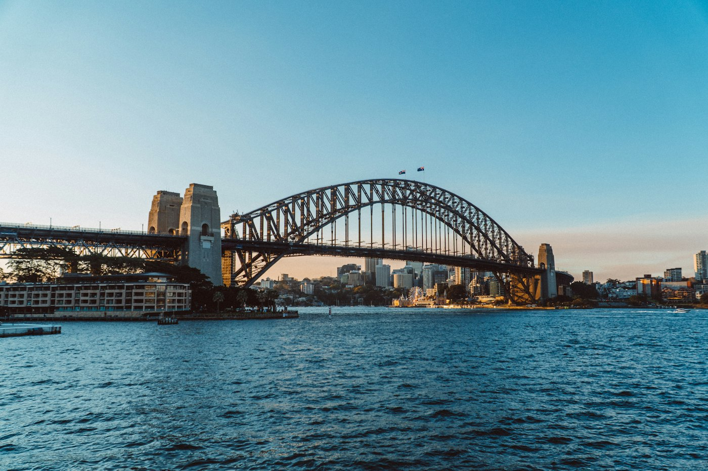
Benchmarked: sydney.com organises by suburb — not by what you want to do
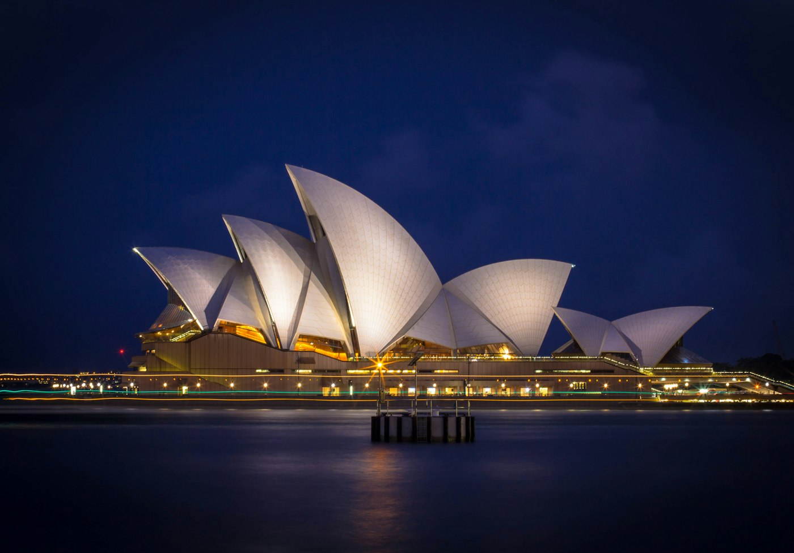
10.9M visits a year — the city is planned around experiences
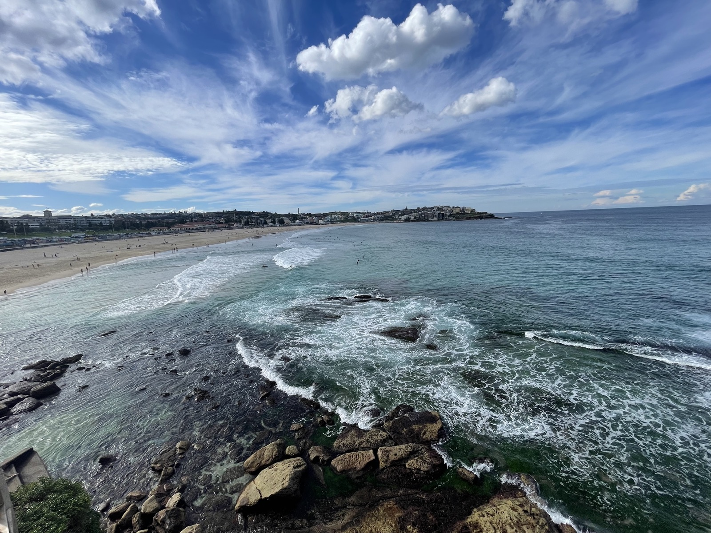
The personas: time-poor, cost-aware, deciding on a phone
Every later decision is traceable back to the research and the personas — I'll show that chain explicitly.
Background research · the market
One city, many experiences
Domestic visitors — yr to Mar 202663.6M
International arrivals — 20258.9M
Bars to scale · Destination NSW · TRA
Total visitor spend (intl arrivals)$192.4B
Bars to scale · record year — TRA
Nearly two in three international visitors are returning — they've seen the icons and want beyond them. The site must convert first-timers fast, then serve depth.
Opera House — 10.9M visits/yr
Harbour Bridge — 8.2M visits/yr
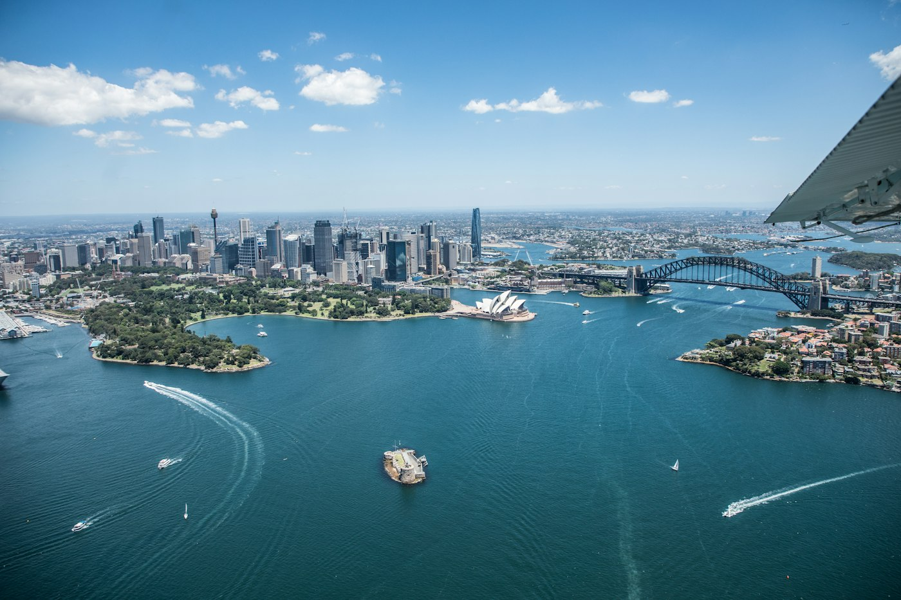
Manly ferry — free, 20–30 min
Background research · place insights
What Sydney actually is, for visitors
A harbour, not a grid
Experiences scatter across harbour, bays, beaches and the CBD — walking and ferries matter as much as driving. A suburb-based IA fights the city's shape.
Free is a superpower
Opera House exterior, Botanic Garden, Manly ferry ($0–20), beaches — Sydney is walkable and mostly free. That's invisible on current sites.
Depth is a real demand
64% of int'l visitors return; WTTC puts global tourism ~$315B. Repeaters want food, beaches, night life — not the same icons.
The audience, in three groups
- First-timers — need icons fast, no 40-page guide
- Return visitors — need depth, curation, "what's new"
- Locals — need free, this-weekend, no-car plans
Common planning moments
- "I have 4 hours and it's getting dark"
- "What can we do that's free this Saturday?"
→ the filters: cost · duration · time · access
Bondi — beach culture, 20 min east
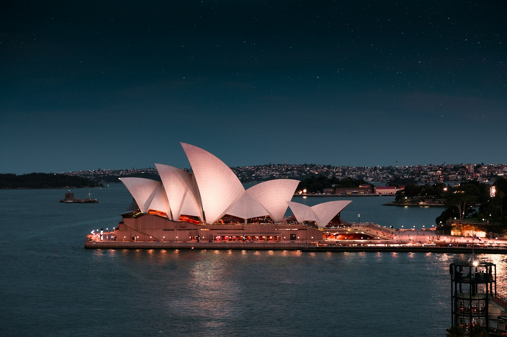
Botanic Garden — free, next to the Opera House
Benchmarking · sydney.com
Where planning breaks down
Organised by destination (suburb) — “what can I do?” requires browsing geography
Experience-first IA · geography demoted to a facet
No time-aware planning — nothing answers “I have 4 hours and it's getting dark”
Duration + time-of-day filters · “best time” on every result
Free vs ticketed buried in article text · no itinerary building
Cost badges (text) · “My Plan” itinerary with share link
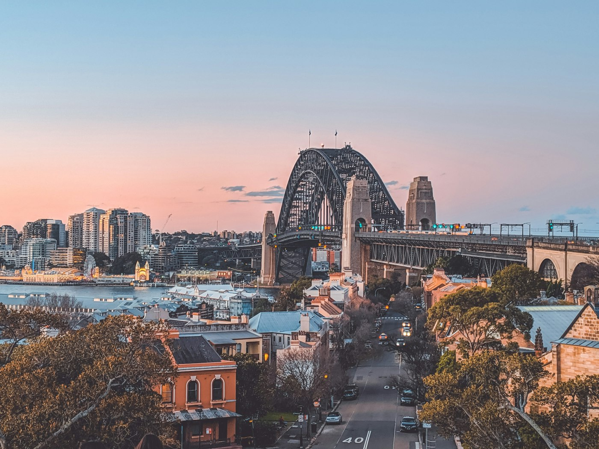
The CBD & Bridge from Barangaroo — content to organise
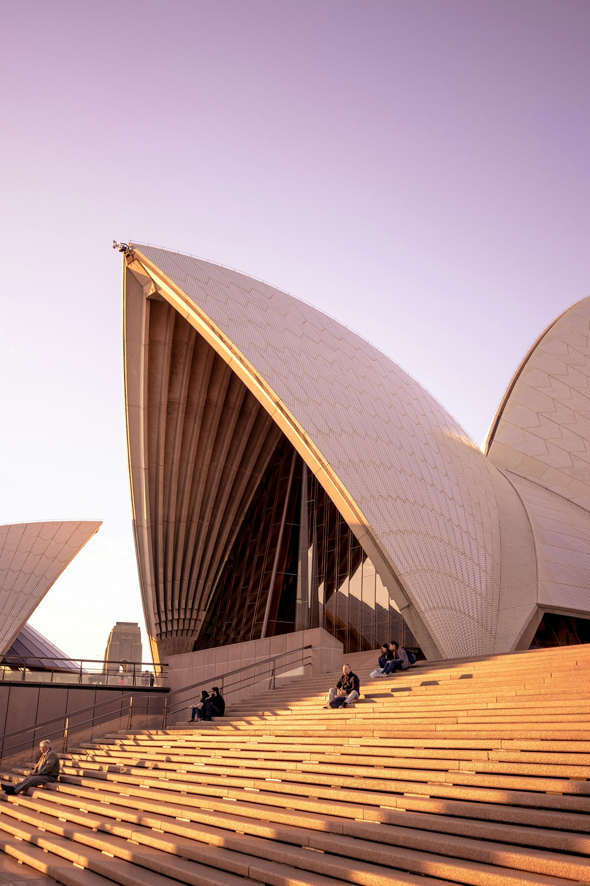
Visitors at the Opera House — experiences to plan around
The concept
Harbourline — plan by experience, not postcode
Harbourline answers the three questions Sydney visitors actually ask — what can I do, when can I do it, what will it cost — and turns the answers into a plan you can save, reorder and share.
Browse by experience→Filter: cost · time · day→My Plan
Pillar 1 · Experience-first
Content is organised by what you want to do (sailing, food, art, beaches) — geography becomes a filter.
Pillar 2 · Constraint-aware
Every experience carries cost, duration, best time of day, access — the four facts planning depends on.
Pillar 3 · Plan & share
"My Plan" collects picks into a day; a no-login share link turns the plan into word-of-mouth.

One harbour, many experiences — Harbourline organises by the moment, not the map.
Personas · evidence-based
Three planners, one shared trait
Jenna, 27Melbourne designer · first solo trip · 2 nights, ~$1,200Primary
Icons + good food, costs visible, planning on her phone between meetings. Can't tell what's free vs ticketed.
David, 41Seattle PM · 4th visit, 10 nights, with partnerSecondary
Has seen the icons — wants hidden beaches, local food, evening culture; weather changes daily plans.
Aisha, 34Inner West teacher · planning a free family SaturdayTertiary
Free, this weekend, no car — events are buried; nothing filters by cost + time together.
Shared insight: time-poor, cost-aware, mobile-first planners who decide fast → organise by experience & constraints, not geography.
Personas → design decisions
Every feature has a reason
PersonaKey needHarbourline's response
Jenna, 27primary · first-timer
Costs visible before committing; planning on mobile, mid-decision
Cost badges with text on every card · “+ Add to plan” inline · persistent plan strip / sticky mobile bar
David, 41secondary · repeater
Beyond the icons — depth, curation, evening options
“Go Deeper” curated layer · time-of-day facet (sunset / evening) · collection pages with stories
Aisha, 34tertiary · local
Free, this weekend, no car — fast combined filters
Combined cost+duration+access facets (bottom sheet on mobile) · free events surfaced on home
Traceability: every wireframe decision names the persona, need and response that forced it
The matrix is the rubric hook: zoom any wireframe and you can name the persona that forced the decision.
Information architecture
Shallow, experience-first sitemap
Home L0
L1 · coreExperiences
L1 · coreMy Plan
L1Events
L1Go Deeper
L1About
Experience detail
Faceted results (area · cost · duration · time · access)
Day view
Share / export
Collection detail
Event detail
My Plan: the retention hook — planning becomes a shareable plan
Facets, not map branches: activity, time and budget first
Three levels deep, maximum — nothing hides behind a branch
Three levels max. Core paths are one tap from home; everything else is a detail or a facet result. Mobile uses bottom tabs for the three L1 destinations.
Information architecture · decisions
Why it's shaped this way
Geography = facet
Personas plan by activity & time, not postcodes. Area is a filter chip inside results — visible, never a branch you must climb.
“Go Deeper” for repeaters
64% of int'l visitors return. A curated layer — collections, food, night culture — serves David without polluting the first-timer path.
“My Plan” is primary
The payoff page: planning becomes a plan. Saved, reorderable, shareable — and the site's retention engine.
Primary user flow (Jenna, 2-hour day):
Home → “Surprise me” chips→
Experiences · facets→
Detail · cost & time confirmed→
+ Add to plan→
My Plan · reorder → Share link
Home → “Go Deeper”→
Night culture · collections→
Detail · repeat context→
+ Add to plan (David)→
Share with a friend
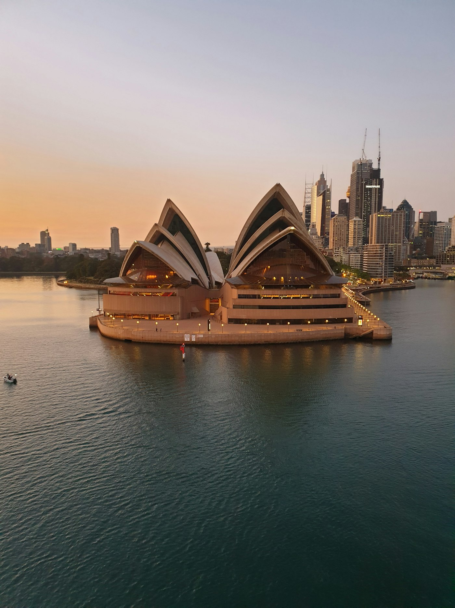
One question drives the whole IA: what do you want to do — and what can you spend?
Visual design · ideation
Annotated moodboard
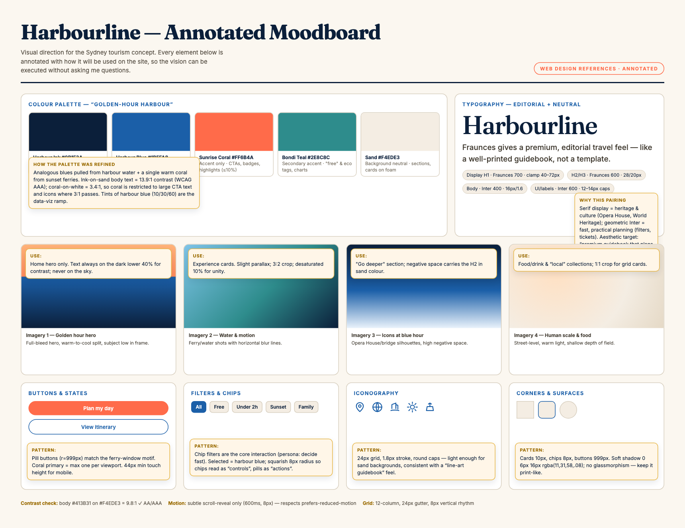
Full board: palette · type · imagery · buttons · filters · icons · corners — every reference annotated.
“Golden-hour harbour” palette
Ink & blue for structure · sand neutrals · coral ≤10% — the single accent for committed actions.
Fraunces + Inter
Serif display = heritage & culture (guidebook feel) · Inter = fast, practical planning UI.
Web-native references
Colours, fonts, borders, iconography, imagery — annotated so a designer can execute without questions.
Visual design · system
The design system, executed
Harbour Ink#0B1F3A · structure, text
Harbour Blue#1B5FA8 · links, primary UI
Bondi Teal#2E8C8C · secondary accent
Sunrise Coral#FF6B4A · committed actions ≤10%
Bondi Sand#F4EDE3 · card & section fills
Typography
Harbour, not postcode
Fraunces for display — heritage feel. Inter for UI and body — fast and legible at 14px. Two families, fixed weights, 8px type rhythm.
Controls
+ Add to plan
Free< 2 hSunsetNo car
FreeFrom $45Book ahead
Iconography & geometry
8
10
999
chips · cards · buttons
12-col grid · 24px gutter · 8px rhythm
One system, every surface: moodboard, wireframes and deck share the same tokens
Same tokens render the moodboard, wireframes and this deck — contrast checked to WCAG AA, coral reserved for the committed action.
Ideation · concept exploration
Three directions, one winner
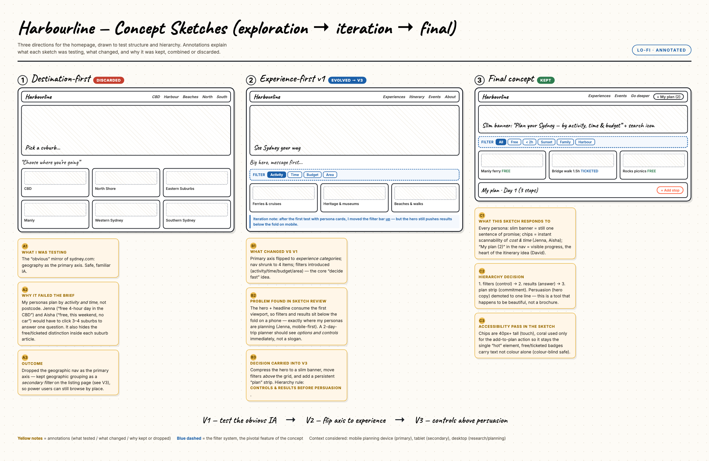
V1 destination-first (discarded: personas don't think in postcodes) → V2 experience-first (hero pushed filters below the fold on mobile) → V3 final: controls & results before persuasion.
Each sketch is annotated: what it tested · what changed · why it was kept, combined or discarded · how it responds to user needs.
Depth · pivotal decision
Zoom: the plan, always one tap away
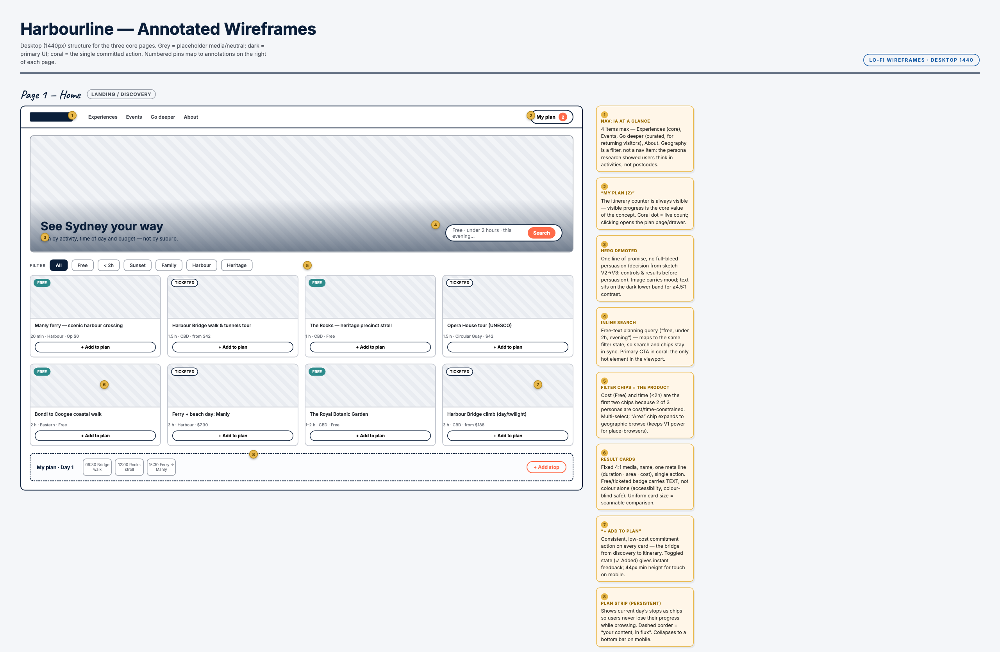
Pivotal decision: every card carries “+ Add to plan”, backed by a persistent plan strip — Jenna commits without leaving the screen.
Hierarchy rule
Controls & results before persuasion. Hero demoted to a slim banner; chips — Free · <2h · Sunset — sit first (cost & time were the top persona constraints).
Persona → decision
Jenna: phone, mid-decision, budget-minded → the add-to-plan action + sticky plan strip is the heart of the concept.
Mobile echo
Same strip becomes a sticky bar above the bottom tab bar — the plan is always one tap away.
Wireframes · desktop
Annotated desktop set — 1440
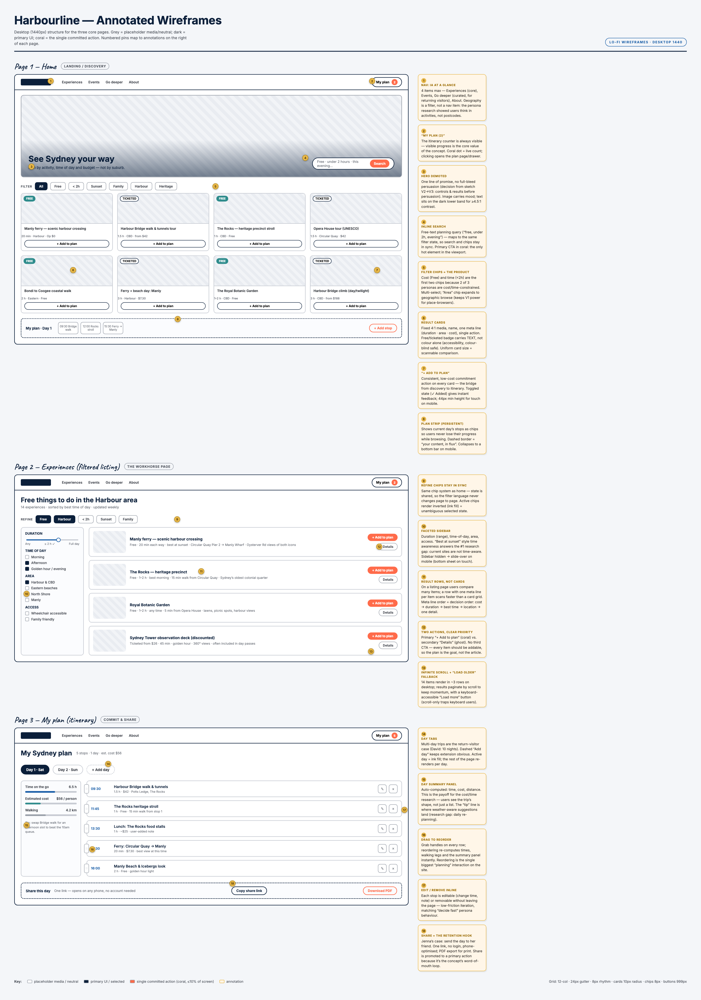
Three screens: home (chips + featured) · faceted listing (filters left, cost/time rows right) · My Plan (drag-reorder days, share, export).
Pinned annotations explain each pattern: facet rail, cost badge with text, plan strip, drag-to-reorder, share CTA as the single coral action.
Wireframes · mobile
Annotated mobile set — 375
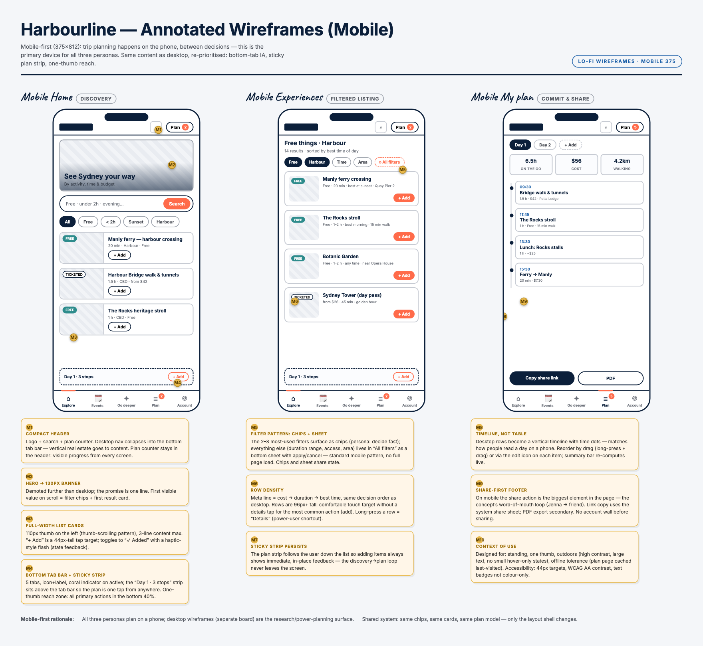
Mobile-first, as primary device: bottom-tab IA · sticky plan strip above tabs · filters as a bottom sheet · share-first footer.
44px touch targets, one-thumb reach, bottom sheet instead of side rail — every annotation maps back to the same design tokens.
Strategy · retention & differentiation
Why people come back
THE SHARE LOOP
Plan a day in “My Plan”picks auto-grouped by time
Share a link — no loginfriend opens the plan in one tap
Friend edits & re-sharescollaboration without accounts
Word-of-mouth acquisitioneach shared plan = a new visitor
sydney.com today
Harbourline
Browse by suburb / destination
Browse by experience & activity
No cost/duration/time signals
Cost, duration, best-time on every result
Read articles, plan in your head
Persistent “My Plan” you can save & reorder
Session ends when the tab does
Login-free share link keeps the plan alive
The metric: share-link opens per plan — word of mouth, built into the architecture
The site's metric that matters: share-link opens per plan — a word-of-mouth channel the benchmark has no equivalent of.
Self-evaluation · constraints & next steps
What I'd do next
Built-in quality
- WCAG AA contrast throughout
- Badges carry text, never colour alone
- 44px targets, keyboard-reachable
- Two font families, 8px rhythm
Constraints of this proposal
- Static wireframes — no live data yet
- Photos are licensed stock, not site assets
- Personas are research-informed, not user-tested
Next steps
- Task-based testing with 5 users (Jenna flow)
- Content model for CMS: cost/time/access fields
- A/B hero vs controls-first layout
Next: five-person usability pass on the facet rail — the first thing I would test
Free ferry — the trip that started this
Honest reflection: the riskiest assumption is that visitors will trade the familiar map-based browsing for facets — the share loop and "Go Deeper" curation are my answer if that trade slows adoption.
Closing
It plans by how you want to spend your time,
not by where you're standing.
Every artefact — the experience-first IA, the cost & time facets, the persistent plan, the mobile-first layout — traces back to the research and the three personas.
Thank you — happy to take questions.